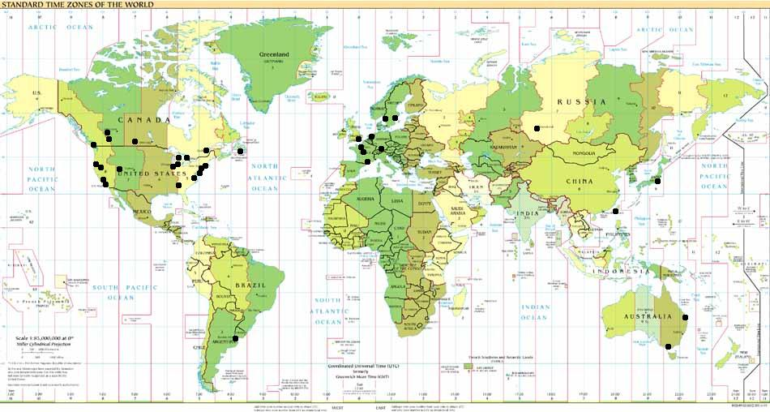

![[OpenBSD]](../images/smalltitle.gif)
Цели проекта
Очевидно, что каждый разработчик, работающий над OpenBSD, имеет свои
собственные цели и приоритеты, но можно классифицировать цели, к которым
мы все стремимся:
- Предоставить по возможности самую лучшую платформу для разработки программ.
Предоставлять полный доступ к исходным текстам
разработчикам и пользователям, включая возможность непосредственного
просмотра изменений в ветви CVS. Пользователи даже могут
просматривать наши исходные коды и их изменения
непосредственно на
web!
- Интегрировать качественный код из любого источника с
допустимым копирайтом (лицензия в стиле
Berkeley предпочтительна, GPL допустима, NDA - нет). Мы хотим
предоставить исходный код, который каждый сможет использовать ДЛЯ
ЛЮБЫХ ЦЕЛЕЙ, без ограничений. Мы стараемся делать наше
программное обеспечение надежным и безопасным, и поощряем компании
в использовании любых нужных им частей. Существуют
коммерческие продукты для OpenBSD.
- Уделять внимание проблемам безопасности и
устранять ошибки раньше всех. (Пытаемся сделать OpenBSD самой
безопасной операционной системой).
- Глубокая интеграция криптографического программного
обеспечения.
Это означает реализацию протоколов IPsec, IPv6, Kerberos, free-AFS,
средств работы с ключами и других форм стойкой криптографии
или использующих криптографию систем.
OpenBSD разрабатывается и выпускается в Канаде и, по канадскому
законодательству, экспорт криптографических продуктов законен.
(Согласно
исследованиям, проведенным гражданином Канады, и
как значится в списке контроля над экспортом Канады).
Разработчики OpenBSD проводят активное исследование и разработку
IPsec.
- Следить за стандартами и реализовывать их (ANSI, POSIX, части X/Open,
и т.д.)
- Создавать максимально аппаратно-независимый исходный код.
По возможности поддерживать как можно больше
различных систем и устройств.
- Быть свободными от политики насколько это возможно; решения
должны приниматься на основе технической целесообразности.
- Не оставлять серьезных проблем без решения.
- Предоставить хорошую платформу для кросс-компиляции/разработки.
- Импортировать внешние пакеты с минимальными изменениями - это облегчает
апгрейд - и посылать сделанные изменения разработчику пакета.
- Создавать релизы на CDROM примерно каждые шесть месяцев, в частности для
финансирования проекта...
Финансирование проекта
Естественно, что проекту OpenBSD необходимы средства для работы, ввиду
затрат на подключение к Internet и такие же апгрейды оборудования, которые
испытывают все. По этой причине проект продает CDROM'ы наших самых последних
релизов. Помимо этого, для увеличения финансирования проект стал выпускать
футболки. Таким образом, покупая OpenBSD CD или футболку на конференции,
в других местах, где продают наши продукты, или на нашей
странице заказов CDROM, вы помогаете
увеличить шансы появления следующих релизов OpenBSD.
Также возможно пожертвовать деньги или оборудование,
в этом случае ваше имя появится на нашей
странице вкладов.
За дополнительной информацией обращайтесь к
Theo de Raadt или просто вышлите
чек с пожертвованиями в канадских долларах или долларах США:
OpenBSD
812 23rd Ave SE
Calgary, Alberta
Canada
T2G 1N8
(Выписывайте чеки на "Theo de Raadt", так как я не могу обналичить чеки,
выписанные на "OpenBSD".)
Кроме того, теперь есть возможность пожертвовать деньги проекту OpenBSD прямо
в онлайн, посылая их через
кредитную карточку или
PayPal.
Хотя данные пожертвования по законам США не дают таких налоговых льгот,
как благотворительные пожертвования, льготы можно получить, отнеся их на
счет операционных расходов, и если у кого-нибудь возникнет такое желание,
он должен проконсультироваться со своим экономистом или бухгалтером. То же самое
относится к другим странам, где корпорации могут делать пожертвования с
налоговыми льготами на условиях "Good Will".
В самом начале, организуя проект OpenBSD, Theo de Raadt истратил более 30 000
канадских долларов, в основном из-за высоких затрат на подключение к Internet
в Канаде (из-за политики США относительно шифрования, переместить проект в США
невозможно). Таким образом, никакого серьезного финансирования или разделения
затрат от компаний или образовательных учреждений не было.
Theo работает над улучшением OpenBSD на постоянной основе, и большая
часть финансов проекта расходуется на покупку разработчикам нового
оборудования с тем, чтобы они могли продолжать улучшать OpenBSD (например,
с момента появления OpenBSD на рынке появилось более 20 новых видов
ethernet-карт). Таким образом, необходимо постоянное финансирование. Непрерывные
пожертвования наших пользователей являются тем, что обеспечит существование
OpenBSD в будущем.
Где живут наши разработчики?
На этой карте показаны примерные места проживания наших разработчиков.
Мы будем пытаться ее время от времени обновлять, но сильно на это не
рассчитывайте.

 www@openbsd.org
www@openbsd.org
Originally [OpenBSD: goals.html,v 1.61 ]
$Translation: goals.html,v 1.10 2003/05/01 10:41:01 dfa Exp $
$OpenBSD: goals.html,v 1.9 2003/05/01 12:00:10 jufi Exp $